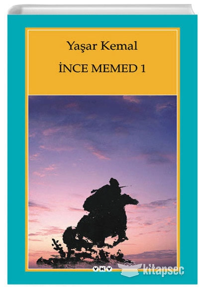

<!DOCTYPE html>
<html lang="tr">
<head>
    <meta charset="UTF-8">
    <meta http-equiv="X-UA-Compatible" content="IE=edge">
    <meta name="viewport" content="width=device-width, initial-scale=1.0">
    <title>Document</title>
</head>
<body>
    
</body>
</html>

<h1>SİNAN ALP</h1>
<h2>Hakkımda</h2>
<p1>Merhabalar, ben Sinan.</p1>
<p1>27 yaşındayım ve Düzce'de çalışıyorum. Kendimi yazılım ile ilgili her konuda geliştirmek istiyorum.
    Bu yolda da bana çok güzel bilgi ve birikimler katan Kodluyoruz ve Patika ailesine çok teşekkür
    ederim.
</p1>  

<h1>ilgi alanlarım</h1>
<ol>
    <li>filmler</li>
        <ul>
            <li>v for vendetta</li>
            <li>naked</li>
            <li>
                <a href="https://www.imdb.com/title/tt0758758/" target="_blank">İnto the wild</a>
            </li>
        </ul>
    <li>diziler</li>
        <ul>
            <li>H.I.M.Y.M</li>
            <li>Dark</li>
            <li>
                <a href="https://www.imdb.com/title/tt2306299/" target="_blank"> Vikings</a>
            </li>
        </ul>
    <li>kitaplar</li>
        <ul>
            <li>İnce Memed</li>
            <li>Suç ve Ceza</li>
            <li>Fıtrat</li>
        </ul>
</ol>

<h2>Sevdiğim kitaplar</h2>
<h3>İnce Memed</h3>

<p>
    <em>İnce Memed,</em>  Yaşar Kemal'in 1955 ile 1987 arasında yazdığı ve <strong>dört ciltten</strong>  oluşan roman serisidir. Serinin konusu <span style="color:blue">Cumhuriyet döneminin ilk yıllarında</span>  Çukurova'da geçmektedir. Seri, Anadolu halkının geri kalmışlığı, köy hayatının sefaleti ve ağaların tüm yöreye tamamen hakim olması üzerine bu duruma karşı bir isyan öyküsüdür.
</p>    